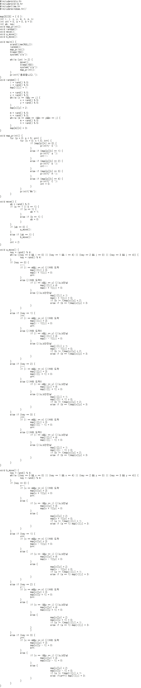
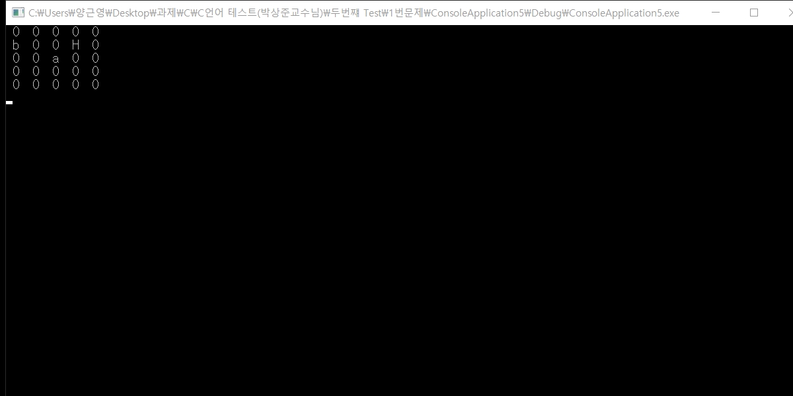
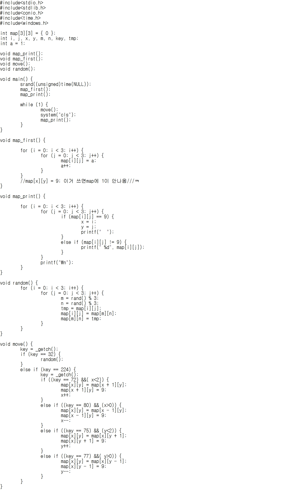
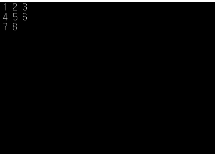
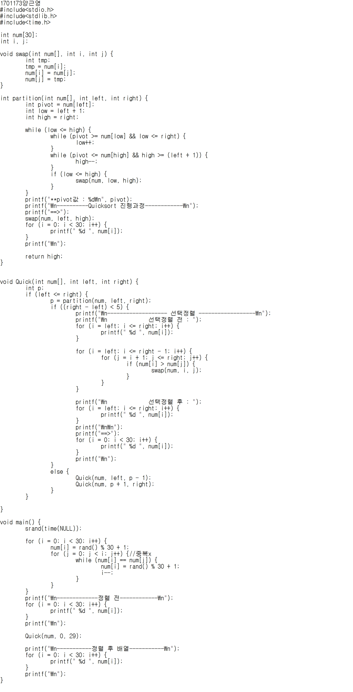
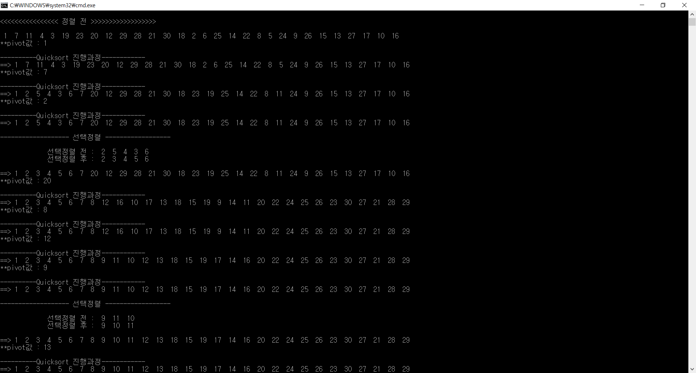

1-2학년 때 했던 c언어 코딩 몇 가지를 모아놓았다.
a와 b가 집에 들어가기!! a와 b가 랜덤으로 움직입니다. 움직이다가 a와 b가 만나면 C로 합쳐졌다가, 헤어지면 다시 a와 b로 분리됩니다.
<<소스코드>> 
<<실행 결과>>

3*3배열에 차례대로 1~8까지 수를 집어넣고 맨 마지막은 빈 칸으로 둡니다.
스페이스바를 누르면 랜덤으로 패가 뒤섞입니다. 뒤섞인 패를 다시 차례대로 맞추는 퍼즐입니다.
빈 칸으로 숫자를 옮겨가는 방식으로 퍼즐을 맞출 수 있습니다.
<<소스코드>> 
<<실행 첫 화면>>

자료구조의 선택정렬의 진행과정과 결과가 보이게 코딩한 것입니다.
<<소스코드>> 
<<실행 화면>>
